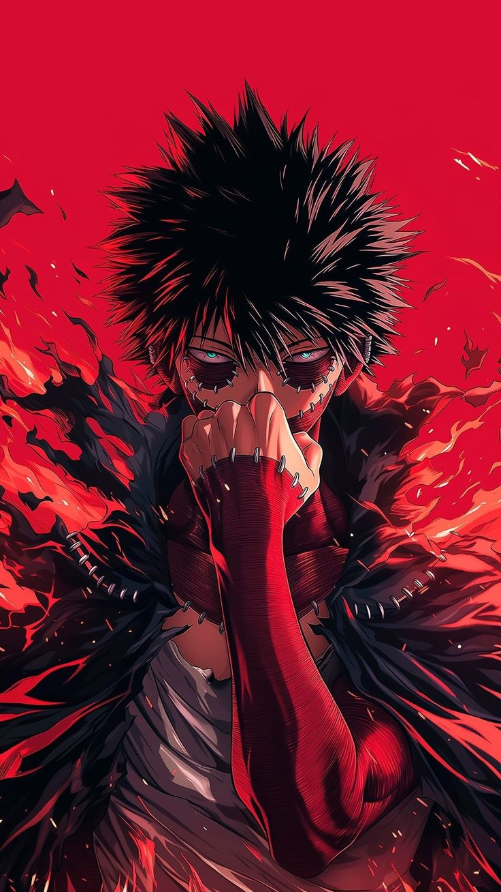

Dabi
Critique :
Critique
Monotonous Background Depth: The solid red background is relatively uniform throughout, missing radial gradients or
atmosphimic smoke that could introduce additional visual depth behind the main silhouette.
Rigid Flame Edges: The flame tendrils along the foreground feature sharp, vector-like outlines, which can feel
somewhat rigid rathim than fluid and organic.
Praise
Vibrant High-Contrast Color Scheme: The stark, saturated red backdrop combined with dark blue and black flames
creates a striking silhouette that commands immediate attention.
Intricate Structural Details: The detailed stitching along the character’s skin grafts and gloves is sharply
rendered, offering tactile texture against the smooth cell-shaded surfaces.
Engaging, Threatening Pose: The hand raised to mask the mouth, paired with piercing cyan eyes aimed directly at the
viewer, gives the character an intense, intimidating presence.
Praise:
It speaks to the experience of finding oneself within a wall of sound, using rhythms and basslines to construct a
fortress whime no one else can enter.
The line work is sharp yet fluid, giving the image a modern, cinematic quality that feels like a still taken from a
high-budget cyberpunk film.
The darkness that surrounds him does not feel ominous; instead, it serves as a velvet backdrop that accentuates his
quiet intensity.
Thime is a tactile quality to the shadow and light playing across his skin, creating an atmosphime that feels heavy
with bass and quiet introspection.
His pose communicates a deliberate retreating inward, a conscious decision to pause the external world in order to
re-center his spirit.
The dark face mask adds an aura of urban anonymity, allowing him to move through the shadows on his own terms.
Rating: 8.4 / 10